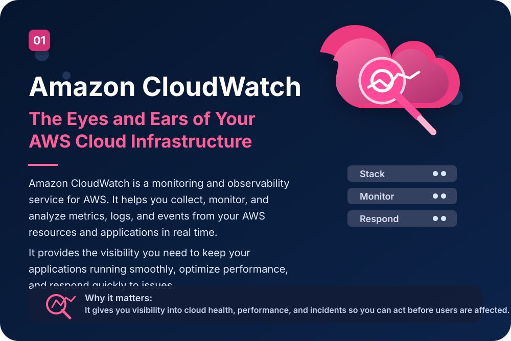
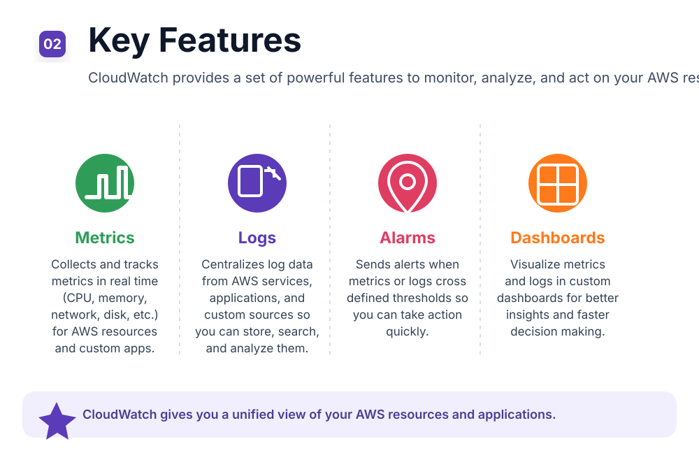
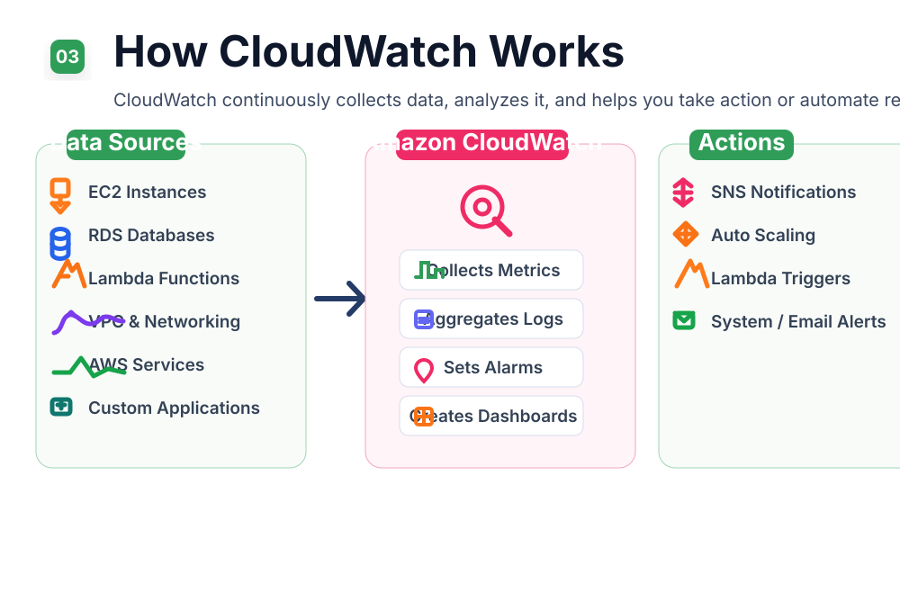
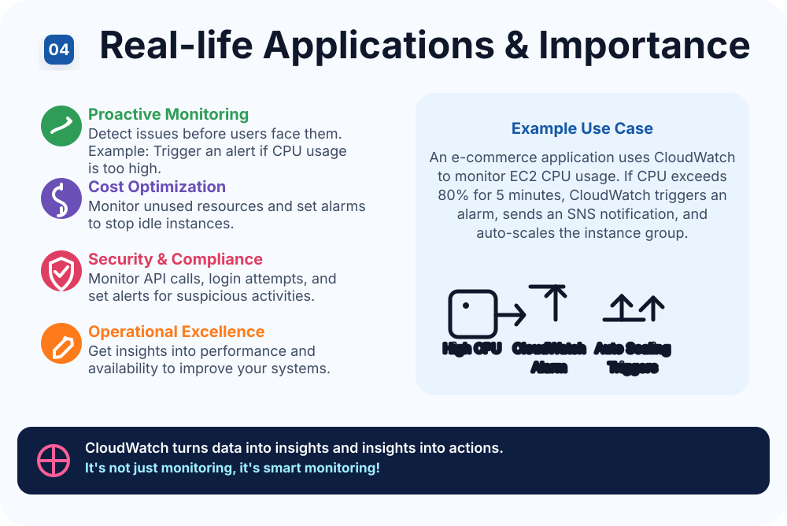

AWS CloudWatch
AWS CloudWatch – Cloud Infrastructure Self Learning Activity
A visual walkthrough of AWS CloudWatch covering the core concepts from the learning activity: what it does, how the service works, its key features, and where it matters in real deployments.



